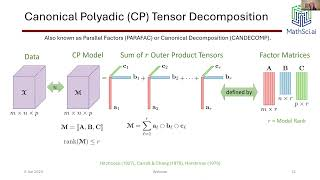
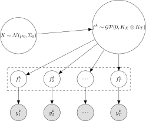

De-Mystifying Aging in Basketball
A Latent Variable Approach
Abhijit Brahme
2025-01-13
Research Interests
Current Projects
- Metric / Manifold Estimation from Trajectory Valued Data
- Prof. Nina Mialone (Dept. of Electrical Engineering)
- Approximate HMC Methods
- Prof. Andrew Holbrook (UCLA, Dept of Public Health)
- A Latent Variable Model for Modeling Multi-Dimensional Mixed Time-Series Data
- Prof. Alex Franks (Dept. of Statistics)
Motivation
- Successfully forecast player performance, especially young players
- Gain insight into how different observable metrics may peak at varying timepoints for certain “types” of players
- Quantify a level of uncertainty regarding players’ future performance
- Jointly model all of the above
Relevant Work
- Bayesian Hierarchical Framework
- Hierarchical aging model applied to hockey, golf, and baseball (Berry, Reese, and Larkey 1999)
- Gaussian Process regressions by different basketball positions (Page, Barney, and McGuire 2013)
- Parametric curves analyzing pre and post peak-performance (Vaci et al. 2019)
- Functional Data Analysis
- Functional principal components clustering (Wakim and Jin 2014)
- Nearest Neighbor algorithm to characterize similarity between players (Silver 2015)
- Production curves as a convex combination of curves from the same set of archetype (Vinué, Epifanio, and Alemany 2015)
Data Overview
- \(\approx\) 3,000 NBA players from years 1997 - 2021, from the ages of 18 - 39
- Longitudinal mixed tensor valued data \(\mathcal{Y}\) of size \(N\) by \(T\) by \(K\) where \(N\) is the number of players, \(T\) is the number of years in a player’s career, and \(K\) are the number of production metric curves with \(\mathcal{Y}_{ntk}\) is missing if player \(n\) is not observed for metric \(k\) at age \(t\).
- Non-missing entries are observations from exponential families (i.e Binomial, Gaussian, Exponential, Poisson, etc.)
- \(\Omega\) is binary tensor of same size as \(\mathcal{Y}\) indicating missingness.
Distributional Assumptions
We include the following metrics and distribution families:
- Poisson
- \(\mathcal{R} =\) {FG2A, FG3A, FTA, BLK, OREB, DREB, TOV, AST, STL}
- Gaussian
- \(\mathcal{G} =\) {DBPM, OBPM}
- Binomial
- \(\mathcal{B} =\) {FG2M, FG3M, FTM}
- \(\mathcal{A} =\) {FG2A, FG3A, FTA}
- Exponential
- \(\mathcal{M} =\) {Minutes}
- Bernoulli
- \(\mathcal{K} =\) {Retirement}
\[\begin{align} Y^k_{t} &\sim \begin{cases} Pois(Y^m_t e^{f^k_{t}}) \text{if } k \in \mathcal{R} \text{ , } \forall m \in \mathcal{M} \\ Bin(Y^j_{t}, logit^{-1}(f^k_{t})) \text{ if } k \in \mathcal{B} \text{ , } j \in \mathcal{A} \\ \mathcal{N}(f^k_{t}, \frac{\sigma^2_k}{Y^m_t}) \text{ if } k \in \mathcal{G} \text{ , } \forall m \in \mathcal{M}\\ Bern(logit^{-1}(f^k_t)) \text{ if } k \in \mathcal{K}\\ Exp(e^{f^k_t}) \text{ if } k \in \mathcal{M} \end{cases} \end{align}\]
Methods
Probabilistic Tensor Decomposition

This model seeks to factorize the \(N \times T \times K\) linear scale tensor \(A\) using CP Decomposition. Since we have various outputs that are not normally distributed, this becomes a form of exponential family CP Decomposition.
Can simply think of this as Multi-modal PCA.
Latent Space
Projection Results
Posterior Distribution of Peak(s)
Functional Basis

Let \(\mathcal{X}\) be the tensor of normalized gaussian-scale linear predictors of dimension \(N \times T \times K\). Then, \(\mathcal{X}\) is decomposed into a “core” tensor \(\mathcal{Y}\) of dimension \(N \times M \times K\) and “factor” matrices \(A \in \mathbb{R}^{N \times N}\), \(B \in \mathbb{R}^{T \times M}\), \(C \in \mathbb{R}^{K \times K}\).
These bases in \(B\) represent the set of common curves across time present in all players. By ensuring that \(A\) and \(C\) are identity matrices, the horizontal “slices” of the core tensor represent how much different metrics contributed to each basis for each slice (player).
Functional Basis Results
Functional Basis Results (contd.)
Future Work
- Using a hybrid Gibbs-HMC routine, perform the following updates:
- Sample \(X\), \(\gamma\) while holding all other parameters fixed using HMC proposal step
- Conditional on the sampled \(X\) and \(\gamma\), sample the remaining parameters using HMC proposal step
- Posterior Coverage Tests
- Holdout forecasting performance
Questions ?
References
Berry, Scott M, C Shane Reese, and Patrick D Larkey. 1999. “Bridging Different Eras in Sports.” Journal of the American Statistical Association 94 (447): 661–76.
Gundersen, Gregory W., Michael Minyi Zhang, and Barbara E. Engelhardt. 2020. “Latent Variable Modeling with Random Features.” https://arxiv.org/abs/2006.11145.
Page, Garritt L, Bradley J Barney, and Aaron T McGuire. 2013. “Effect of Position, Usage Rate, and Per Game Minutes Played on NBA Player Production Curves.” Journal of Quantitative Analysis in Sports 9 (4): 337–45.
Silver, Nate. 2015. “We’re Predicting the Career of Every NBA Player. Here’s How.” FiveThirtyEight. https://fivethirtyeight.com/features/how-were-predicting-NBA-player-career/; FiveThirtyEight.
Vaci, Nemanja, Dijana Cocić, Bartosz Gula, and Merim Bilalić. 2019. “Large Data and Bayesian Modeling—Aging Curves of NBA Players.” Behavior Research Methods, 1–21.
Vinué, Guillermo, Irene Epifanio, and Sandra Alemany. 2015. “Archetypoids: A New Approach to Define Representative Archetypal Data.” Computational Statistics & Data Analysis 87: 102–15.
Wakim, Alexander, and Jimmy Jin. 2014. “Functional Data Analysis of Aging Curves in Sports.” arXiv Preprint arXiv:1403.7548.
Modeling Setup
Space of players live in low dimensional latent space \(X \in \mathbb{R} ^{N \times D}\)
For a given time \(t\), and metric \(k\), \(f^k_t \sim \mathcal{GP}(0, K_X)\) is a vector of size \(N\), with \(K_X\) capturing correlation across the \(N\) dimension (Gundersen, Zhang, and Engelhardt 2020)

\[\begin{pmatrix}
\vert & \vert & \cdots & \vert & \cdots & \vert \\
\vert & \vert & \cdots & \vert & \cdots & \vert \\
f^k_1 & f^k_2 & \cdots & f^k_i & \cdots & f^k_T \\
\vert & \vert & \cdots & \vert & \cdots & \vert \\
\vert & \vert & \cdots & \vert & \cdots & \vert
\end{pmatrix}\]
Random Fourier Features
Attempt to approximate the inner product \(k(x, y) = \langle \phi(x), \phi(y) \rangle\) with a randomized map \(z: \mathbb{R}^D \rightarrow \mathbb{R}^R\). Computational savings arise if \(R << N\).
Approximation of Gaussian Process can be turned into a linear operation, \(f^k_{t}(X) \approx Z(X)^T\beta^k_{t}\) which is computationally beneficial if \(N\) large.
In our case, we let \(k(x,y) = k(x - y) = exp(\frac{-||x - y||^2}{2})\) be the standard radial basis kernel.
It can be shown that to produce the radial basis kernel, \(\omega \sim \mathcal{N}_D(0, I_d)\).
Thus the map is composed of \(z_{\omega_r} = [cos(\omega_r ^T x), sin(\omega_r ^ T x)]^T\).
\(Z(X) = \frac{1}{\sqrt{R}}[z_{\omega_1}, z_{\omega_2}, \dots, z_{\omega_R}]^T\)
Adjusted Modeling Setup
Probabilistic Tensor Decomposition (contd.)
Let \(\tilde{A}_{pit} = g_{pit}^{-1}(A_{pit})\), where \(g_{pit}\) is the appropriate link function transforming the linear scale parameter into the appropriate exponential family parameterization. Consequently, \(X, V, W, \mu\) are estimated by maximizing the following loss function using gradient descent.
\(\max_{X, V, W, \mu} \sum_{p, i, t} log( F_{pit}( Y_{pit} | \tilde{A}_{pit} )) \cdot \Omega_{pit}\)
where \(F_{pit}\) is the appropriate distribution density function associated with entry \(Y_{pit}\).
This offers the following benefits:
- Latent space \(X\) is created while accounting for sampling variability
- Latent space is created while also accounting for correlations across each mode of the tensor, which is representative of the final model.
Enforcing Convexity
Considering we only wish our function \(f(x,t)\) to be convex in the \(t\) argument, we wish to find all set of \(f(x,t)\) such that \(\frac{\partial ^2 f(x,t)}{\partial t^2} \geq 0\). As such, our desired function has the form
\(f(x,t) = D(x) + C(x)(t-a) + \int_{a}^t \int_{a}^s \frac{\partial ^2 f(x,z)}{\partial z^2}dzds\)
where \(D\) and \(C\) are constants of integration w.r.t \(t\) which could also depend on \(x\).
Key idea: model \(\frac{\partial ^2 f(x,t)}{\partial t^2}\) as the square of a Gaussian Process (\(g(x,t)\)) approximated by basis functions.
Enforcing Convexity / Concavity (contd.)
- \(g(x,t) \approx \sum_{i=1}^M \beta_i(t) \phi_i(x)\) using RFF approximation.
- Here, \(\beta_i(t)\) are \(t\) - dependent coefficients of the basis expansion of \(x\).
- Can be shown that \(Cov(g(x,t)) \approx K_x \bigotimes K_t\) if \(\beta_i(t) \sim \mathcal{GP}(0, K_t)\)
- \(\beta_i(t) \approx \sum_{l=1}^K S(\sqrt{\lambda_l})^{1/2} \alpha_l^i \psi_l(t)\) using the Hilbert Space Approximation
- Substitute in the above equation, and still \(Cov(g(x,t)) \approx K_x \bigotimes K_t\) if \(\beta_i(t) \sim \mathcal{GP}(0, K_t)\)
- We can compute the previous integral since \(\psi_l(t)\) are sinusoidal functions.
- resulting function is not necessarily a gaussian process
- convexity only guaranteed in the Gaussian response case, as exponential link functions are not guaranteed to preserve the result